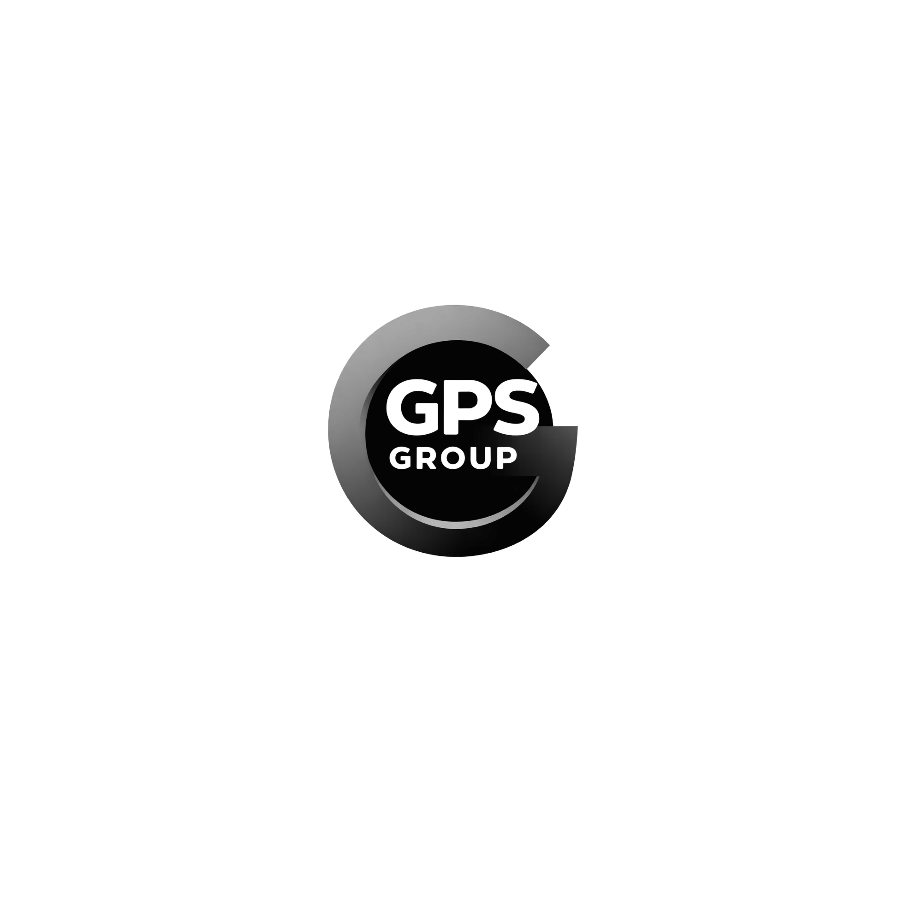

{{ title }}
{% if subtitle %}
{{ subtitle }}
{% endif %}
{% if tagline %}{{ tagline }}
{% endif %} Stand: {{ date }}
Hinweis: Dieses Dokument ist eine interne Arbeitsfassung.
{{ section_title }}
{{ content }}
{% if callout %}
{{ callout }}
{% endif %}
